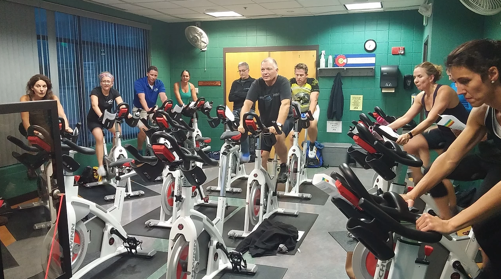

Cycling Instructions:
Our recommendations are for a high rate of revolutions per minute (RPMs), high intensity exercise session
with low to zero resistance on the bicycle wheels. Therefore, you will need access to a stationary bike that
has an RPM read out, and also adjustable resistance.
Additionally, we recommend cyclists wear a heart rate monitor strap on their chest during cycling to safely
monitor heart rate during exercise. These can be purchased at any sporting goods store or Target.
Regarding actual cycling, we recommend the following:
- Baseline (first) Session: Treat your first session as a baseline cycling session, and note what your preferred rate of revolutions per minute is. For instance, suppose your preferred rate is approximately 50RPMs with a resistance setting on the bicycle of 4.
- Subsequent Cycling Recommendations: Lower the resistance of the bicycle all the way down to zero. Your goal is to pedal approximately 30-35% faster than your preferred RPMs. This means that if your preferred rate was 50 RPMs, you will now aim to pedal 67 RPMs
Specifics per Exercise Session:
- Warm Up: Conduct a 5-10 minute warm-up, bringing your heart rate up close to the bottom of your target heart rate range (see below).
- Main Aerobic Set: Cycle at the increased RPMs for 40 minutes in your aerobic range as tolerated.
- Cool-Down: Complete the session with a 5-10 minute cool-down, bringing your heart-rate down to roughly where it was at the beginning of your session.
Notes:
- If you are unable to go the full 40 minutes in your aerobic range, aim to cycle in 10 minute chunks of time, and work towards going 40 consecutive minutes as tolerated.
- As the weeks progress, increase your RPMs gradually to the recommended 80-90 RPMs.
- We recommend cycling 3 times per week, with a day of rest in between each session.
Overall Cycling Recommendations:
- We believe the two most important aspects of advantageous cycling for PD are the RPMs (goal of 80-90 RPMS), and the heart rate being between 60-80% of your maximum during the aerobic portion of exercise. If your heart rate is too high, lower the RPMs slightly to bring it back in range. If your heart rate is too low but your RPMs are at your goal, you can bring the resistance up a bit on the bike until your heart rate is in range, and then lower it again.
- We do not believe there are any benefits to cycling above 80-90 RPMs, and you could put yourself at an increased cardiac risk going above that cadence. If you are going between 80-90 RPMs and your heart rate is too low, add a bit of resistance to the bike.
We recommend people see their doctor to clear them for a new exercise program. If you have no cardiac issues in your history,
the standard calculation to determine an aerobic heart rate range is as follows:
220- your age = maximum aerobic heart rate (HR)
Maximum aerobic x 60% = lower end of your aerobic range
Maximum aerobic HR x 80% = upper end of your aerobic range
So, for a cyclist who is 55 years old:
220 - 55 = 165
165 × 60% (or .60) = 99
165 × 80% (or .80) = 132
So during the aerobic portion of exercise, aim to keep your HR in the range of 99-132 beats per minute.
Additional Recommendation:
We do recommend all of our Parkinson's disease participants are under the care of a movement disorders neurologist
(as opposed to a general neurologist). A movement disorders neurologist has more experience with the tyoes of medications
and dosing that are relative and specific to Parkinson's disease patients.
Contact Information:
Please contact Liz if you have any questions regarding the cycling recommendations-She is a great resource for the Parkinson's
community, regardless of where you receive your care.
Liz Jansen, MPH, BA, Program Manager for Dr. Jay Alberts's Neuroscience Laboratory
The Cleveland Clinic, Department of Biomedical Engineering
Phone: 216-445-3866
Email: jansena@ccf.org